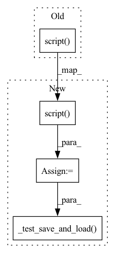

Pattern ID :5139

Before Change
class TestExportModels(unittest.TestCase):
def test_export_multihead_attention(self):
module = multihead_attention.MultiheadAttention(embed_dim=8, num_heads=2)
torch.jit.script(module)
def test_incremental_state_multihead_attention(self):
module1 = multihead_attention.MultiheadAttention(embed_dim=8, num_heads=2)
module1 = torch.jit.script(module1)
After Change
def test_export_multihead_attention(self):
module = multihead_attention.MultiheadAttention(embed_dim=8, num_heads=2)
scripted = torch.jit.script(module)
self._test_save_and_load(scripted)
def test_incremental_state_multihead_attention(self):
module1 = multihead_attention.MultiheadAttention(embed_dim=8, num_heads=2)
module1 = torch.jit.script(module1)
In pattern: SUPERPATTERN
Frequency: 6
Non-data size: 4
Instances
Fragment ID: 18033938
Project Name: mohammadkhalifa/fairseq-tagging
Commit Name: 3df10a9529e2d91dc9d4c1068d401b4935938b58
Time: 2020-01-30
Author: dnn@fb.com
File Name: tests/test_export.py
M Class Name: TestExportModels
N Class Name: TestExportModels
M Method Name: test_export_multihead_attention(1)
N Method Name: test_export_multihead_attention(1)
M Parent Class: unittest.TestCase
N Parent Class: unittest.TestCase
M File Name: tests/test_export.py
N File Name: tests/test_export.py
M Start Line: 62
M End Line: 63
N Start Line: 68
N End Line: 70
'>
Before Change
module = sinusoidal_positional_embedding.SinusoidalPositionalEmbedding(
embedding_dim=8, padding_idx=1
)
torch.jit.script(module)
@unittest.skipIf(
torch.__version__ < "1.5.0", "Targeting OSS scriptability for the 1.5 release"
)
After Change
module = sinusoidal_positional_embedding.SinusoidalPositionalEmbedding(
embedding_dim=8, padding_idx=1
)
scripted = torch.jit.script(module)
self._test_save_and_load(scripted)
@unittest.skipIf(
torch.__version__ < "1.5.0", "Targeting OSS scriptability for the 1.5 release"
)
'>
Fragment ID: 18033937
Project Name: kssteven418/i-bert
Commit Name: 3df10a9529e2d91dc9d4c1068d401b4935938b58
Time: 2020-01-30
Author: dnn@fb.com
File Name: tests/test_export.py
M Class Name: TestExportModels
N Class Name: TestExportModels
M Method Name: test_positional_embedding(1)
N Method Name: test_positional_embedding(1)
M Parent Class: unittest.TestCase
N Parent Class: unittest.TestCase
M File Name: tests/test_export.py
N File Name: tests/test_export.py
M Start Line: 81
M End Line: 84
N Start Line: 88
N End Line: 92
'>
Before Change
TransformerModel.add_args(parser)
args = parser.parse_args([])
model = TransformerModel.build_model(args, task)
torch.jit.script(model)
if __name__ == "__main__":
unittest.main()
After Change
TransformerModel.add_args(parser)
args = parser.parse_args([])
model = TransformerModel.build_model(args, task)
scripted = torch.jit.script(model)
self._test_save_and_load(scripted)
if __name__ == "__main__":
unittest.main()
'>
Fragment ID: 18033934
Project Name: kssteven418/i-bert
Commit Name: 3df10a9529e2d91dc9d4c1068d401b4935938b58
Time: 2020-01-30
Author: dnn@fb.com
File Name: tests/test_export.py
M Class Name: TestExportModels
N Class Name: TestExportModels
M Method Name: test_export_transformer(1)
N Method Name: test_export_transformer(1)
M Parent Class: unittest.TestCase
N Parent Class: unittest.TestCase
M File Name: tests/test_export.py
N File Name: tests/test_export.py
M Start Line: 93
M End Line: 94
N Start Line: 101
N End Line: 103